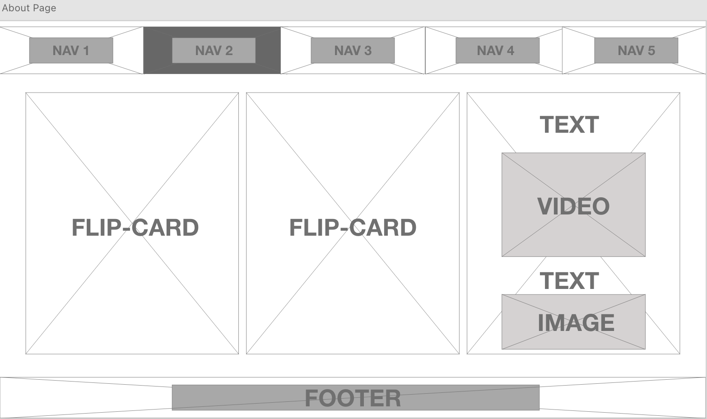

This project is a digital portfolio web design using HTML and CSS. The portfolio showcases front-end web development
skills and consideration of the WCAG 2.0 guidelines to ensure that the UI/UX design is at its best to complement a
variety of users. JavaScript is also utilized to make the webpage more responsive and comply with principles of
inclusivity. The webpage design is made to be compatible with Firefox, Chrome, and Safari on a desktop computer for
a standard 1280px screen size.
Inspiration
There are several design inspirations that I base my web development project on. First, I love the idea of a
seamless design in which components of the webpage are blended in with the background while maintaining the factor
that allows them to be distinguishable. As a result, I used a seamless navigation bar that is distinguishable with a
different-colored design when its state is active. I also have my landing page simple and concise, but direct and
meaningful – the message on the landing page is about welcoming users to my digital portfolio. The image below shows the
nav bar used in this webpage.
Furthermore, to make my webpage interactive, I use flip cards for the page about me so that users can interact with them
instead of having to see a page full of writing. I like to have users interact with my page so that they can find
interesting stuff without disclosing everything at once (principle of disclosure).
The above images are example of my use of flipcard. The photos of me when hovered will show the text describing me
as an individual
Planning
I base my design of this digital portfolio according to the WCAG 2.0 guidelines. The WCAG 2.0 guideline for web design
focuses on 4-key principles: perceivable, operable, understandable, and robust.
Perceivable is defined as information and user interface components must be presentable to users in ways they can
perceive. On the page with a lot of text such as the process and resume page, there is a button to increase and
decrease the font size to accommodate individuals who are vision impaired. The layout of the portfolio overall also
complies with the adaptability guideline, in which contents are presented in meaningful sequences that are easily
identifiable and programmatically determined. Color choice and contrast are also selected to the best convenience of
the user, with a bright shade of blue on white/black text. The video files also allow full freedom of control by the
user, with a pause-play button usable at the discretion of the user.
Operable is defined as user interface components and navigation being operable. All contents can be accessed by
clicks and keyboard inputs, and no content is designed in a way that causes seizures. The cool tone of the
background and content contrast made sure of this. Quick links and status are also provided throughout the webpage
to ensure that the webpage is navigable. The pages are titled and utilize the headings of HTML, and the text font is
ensured to be accessible.
Understandable is defined by information and operation of the user interface being understandable, meaning that it
is both readable and comprehendible. The design ensures that all words are from the English lexicon and uses the
Roman alphabet. The consistent layout of the global navigation bar also allows predictability even with its seamless
design. The design also involves quick access to recovery, in which there exists a button allowing the user to go to
the top of the page in one click.
The Robust principle states that content must be robust enough that it can be interpreted reliably by a wide variety
of user agents, including assistive technologies. In context to the writing of HTML CSS code, the implementation
ensures all tags are closed properly, and naming conventions are easily understandable. Code comments are also in
place to explain parts of the code.
Information Architecture
The figure above is the information architecture of this digital portfolio. The global navigation is very powerful
on this page, as contents are accessible from the global navigation. There are five main pages: landing page, about
me page, project process page, resume page, and contact page. Another navigation is the footer navigation,
consisting of links to social media (LinkedIn), GitHub, and email. These are the navigations that exist consistently
throughout the page. The idea of the homepage follows a simplistic design and also the principle of disclosure, in
which the landing page only consists of a greeting informing the main purpose of the page. For a user to know more,
they should traverse through the page. In pages with lots of content such as the process and resume page, there
exists a font-size modifier button to accommodate various users hence inclusivity, and there exists a timetable,
which is an internal page navigation. These are the utilities of the digital portfolio. Overall, the IA implies the
use of both global and local navigations, in addition to utilities that allow for increased usability and
inclusivity.
Wireframe
The figure above is the wireframe of the landing page. Notice
that the design is very minimalistic. The design is
inspired by the concept of minimalist design, where only necessary elements exist - the greeting and purpose of the
webpage. A minimalist design can reduce the chance of error, hence the principle of error prevention is achieved.
The global navigation also employs multiple cues to inform the user that the navigation bar is at its position
despite implementing a seamless design.

The figure above is the wireframe of the about me page. Notice
the use of sections and flip cards. The flip card
design is inspired by the principle of disclosure whilst also adding the interactive element. The use of sections
instead of having them flow as normal content is to categorize the contents: about me, culinary, interests, and
hobbies. Categorizing this allows the user to know more about the owner of the portfolio quickly.
The figure above is the wireframe of pages that contain paragraphs and images. These are the process and resume
pages, and the design follows the same ideation. The use of an internal page navigation and buttons for
accessibility altogether allow for a more accessible and inclusive webpage design in compliance with the WCAG 2.0
guideline.
The figure above is the wireframe of the contact page. The contact page has field boxes for the visitor to fill out
and a button to submit. A map showing the location of the webpage owner is also embedded on the bottom for reference
of the owner's whereabouts. Utilizing a form, some of the textboxes are fields that the visitor must fill in before
clicking submit. Expect an error prevention message to appear if the user attempts to submit without filling in the
required field.